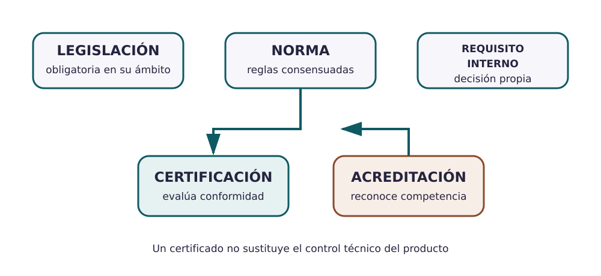

Contenido
Un vocabulario común reduce errores
La normalización facilita que personas y organizaciones entiendan de la misma forma dimensiones, símbolos, métodos, interfaces y requisitos. Una norma no es lo mismo que una ley, y un certificado no convierte automáticamente en perfecto un producto.

| Concepto | Qué significa | Error frecuente |
|---|---|---|
| Norma | Documento consensuado con reglas o directrices para usos repetidos | Suponer que toda norma es una ley |
| Legislación | Requisito jurídico obligatorio en su ámbito | Creer que cumplir una norma sustituye cualquier ley |
| Certificación | Un tercero declara que un sistema, producto o persona cumple requisitos definidos | Confundir certificar con acreditar |
| Acreditación | Reconocimiento formal de la competencia de un organismo para evaluar | Decir que una empresa cualquiera «está acreditada en ISO 9001» |
La familia ISO 9000
ISO 9000 aporta fundamentos y vocabulario para los sistemas de gestión de la calidad. ISO 9001 establece requisitos para un sistema de gestión que puede ser certificado. No son un sello de calidad absoluta del producto ni sustituyen sus requisitos técnicos.
Las normas se revisan. Antes de citarlas hay que comprobar su edición vigente en la fuente oficial. Consulta ISO 9000 y la ficha oficial vigente de ISO 9001.
Sistema de gestión frente a control del producto
Un sistema de gestión organiza responsabilidades, procesos, documentos, riesgos y mejora. El plan de control del producto decide qué comprobar en una operación o lote. Se relacionan, pero no son la misma cosa.
- Incluid una tabla con al menos tres referencias aplicables o potencialmente relevantes.
- Para cada una, indicad quién la publica, qué aspecto trata y qué decisión del dosier apoya.
- Separad normas, legislación y requisitos internos de la empresa.
- Explicad si habláis de certificación del sistema, certificación de producto o acreditación del organismo que evalúa.
No copiéis listas de cláusulas de una norma: explicad su función en vuestro caso.
Relaciona
Relaciona cada concepto con su función. El objetivo es evitar cuatro confusiones frecuentes.
Relaciona cada concepto con su función. El objetivo es evitar cuatro confusiones frecuentes.
", "showMinimize": false, "itinerary": {"showClue": false, "clueGame": "", "percentageClue": 40, "showCodeAccess": false, "codeAccess": "", "messageCodeAccess": ""}, "cardsGame": [{"url": "", "x": 0, "y": 0, "author": "", "alt": "", "audio": "", "color": "#000000", "backcolor": "#ffffff", "eText": "Norma", "urlBk": "", "xBk": 0, "yBk": 0, "authorBk": "", "altBk": "", "audioBk": "", "colorBk": "#000000", "backcolorBk": "#ffffff", "eTextBk": "Documento%20consensuado%20con%20reglas%20o%20directrices%20para%20usos%20repetidos"}, {"url": "", "x": 0, "y": 0, "author": "", "alt": "", "audio": "", "color": "#000000", "backcolor": "#ffffff", "eText": "Legislaci%C3%B3n", "urlBk": "", "xBk": 0, "yBk": 0, "authorBk": "", "altBk": "", "audioBk": "", "colorBk": "#000000", "backcolorBk": "#ffffff", "eTextBk": "Requisito%20jur%C3%ADdico%20obligatorio%20dentro%20de%20su%20%C3%A1mbito"}, {"url": "", "x": 0, "y": 0, "author": "", "alt": "", "audio": "", "color": "#000000", "backcolor": "#ffffff", "eText": "Certificaci%C3%B3n", "urlBk": "", "xBk": 0, "yBk": 0, "authorBk": "", "altBk": "", "audioBk": "", "colorBk": "#000000", "backcolorBk": "#ffffff", "eTextBk": "Declaraci%C3%B3n%20de%20un%20tercero%20sobre%20el%20cumplimiento%20de%20requisitos%20definidos"}, {"url": "", "x": 0, "y": 0, "author": "", "alt": "", "audio": "", "color": "#000000", "backcolor": "#ffffff", "eText": "Acreditaci%C3%B3n", "urlBk": "", "xBk": 0, "yBk": 0, "authorBk": "", "altBk": "", "audioBk": "", "colorBk": "#000000", "backcolorBk": "#ffffff", "eTextBk": "Reconocimiento%20formal%20de%20la%20competencia%20de%20quien%20eval%C3%BAa%20la%20conformidad"}, {"url": "", "x": 0, "y": 0, "author": "", "alt": "", "audio": "", "color": "#000000", "backcolor": "#ffffff", "eText": "ISO%209000", "urlBk": "", "xBk": 0, "yBk": 0, "authorBk": "", "altBk": "", "audioBk": "", "colorBk": "#000000", "backcolorBk": "#ffffff", "eTextBk": "Fundamentos%20y%20vocabulario%20de%20los%20sistemas%20de%20gesti%C3%B3n%20de%20la%20calidad"}, {"url": "", "x": 0, "y": 0, "author": "", "alt": "", "audio": "", "color": "#000000", "backcolor": "#ffffff", "eText": "ISO%209001", "urlBk": "", "xBk": 0, "yBk": 0, "authorBk": "", "altBk": "", "audioBk": "", "colorBk": "#000000", "backcolorBk": "#ffffff", "eTextBk": "Requisitos%20de%20un%20sistema%20de%20gesti%C3%B3n%20de%20la%20calidad%20que%20puede%20certificarse"}], "isScorm": 0, "textButtonScorm": "Guardar la puntuación", "repeatActivity": true, "weighted": 100, "textAfter": "", "version": 2, "percentajeCards": 100, "type": 0, "showSolution": true, "timeShowSolution": 3, "time": 3, "evaluation": false, "evaluationID": "", "id": "idevice-1785969405620-me9v4vlsv", "msgs": {"msgSubmit": "Enviar", "msgClue": "¡Genial! La pista es:", "msgCodeAccess": "Código de acceso", "msgPlayStart": "Pulsa aquí para jugar", "msgScore": "Puntuación", "msgErrors": "Errores", "msgHits": "Aciertos", "msgMinimize": "Minimizar", "msgMaximize": "Maximizar", "msgFullScreen": "Pantalla Completa", "msgExitFullScreen": "Salir del modo pantalla completa", "msgNoImage": "Pregunta sin imágenes", "msgEndGameScore": "Comience la partida antes de guardar la puntuación.", "msgScoreScorm": "La puntuación no se puede guardar porque esta página no forma parte de un paquete SCORM.", "msgOnlySaveScore": "¡Solo puede guardar la puntuación una vez!", "msgOnlySave": "Solo puede guardar una vez", "msgInformation": "Información", "msgYouScore": "Su puntuación", "msgAuthor": "Autoría", "msgOnlySaveAuto": "Su puntuación se guardará después de cada pregunta. Solo puede jugar una vez.", "msgSaveAuto": "Su puntuación se guardará automáticamente después de cada pregunta.", "msgSeveralScore": "Puede guardar la puntuación tantas veces como quiera", "msgYouLastScore": "La última puntuación guardada es", "msgActityComply": "Ya ha realizado esta actividad.", "msgPlaySeveralTimes": "Puede realizar esta actividad cuantas veces quiera", "msgClose": "Cerrar", "msgAudio": "Audio", "msgNumQuestions": "Número de tarjetas", "msgTryAgain": "Necesitas al menos %s% de respuestas correctas para obtener la información. Inténtalo de nuevo.", "msgEndGameM": "Has completado el juego. Tu puntuación es %s.", "msgUncompletedActivity": "Actividad no completada", "msgSuccessfulActivity": "Actividad superada. Puntuación: %s", "msgUnsuccessfulActivity": "Actividad no superada. Puntuación: %s", "msgTypeGame": "Relaciona", "msgCheck": "Comprobar", "msgRestart": "Reiniciar"}}